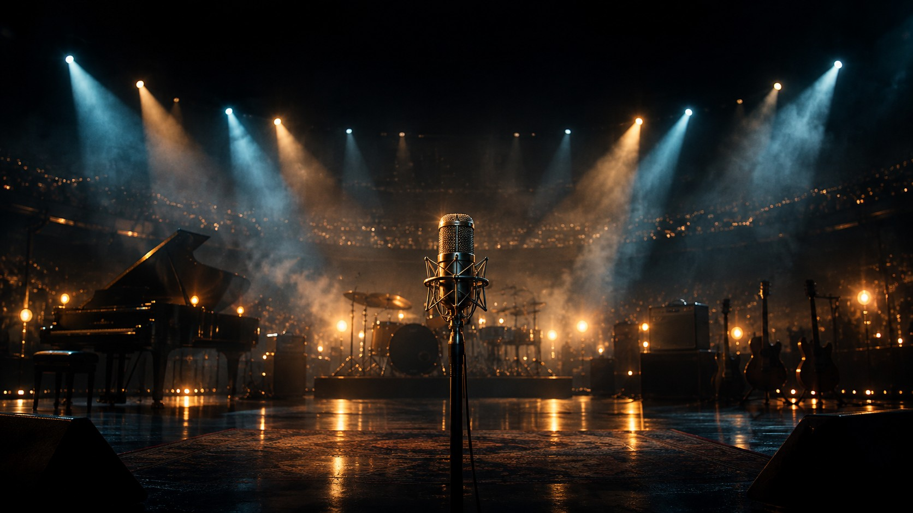

横屏探索 · 01 桌面伴听
播放中
模拟 3s 静置淡化
下一句歌词

夜航星 (Night Navigation)
不鸟万如一 / 纯白
Hi-Res 无损
24bit / 96kHz
穿过漫长寒夜与恒星残骸
在重力沉沦的边缘捕获微光
我们是银河静默的航海者
We are the silent sailors of the galaxy
等待下一束信号自深空降临
哪怕电波散作零落的光年尘埃
愿这声微弱呼唤跨越亿万光纪
02:18
04:46